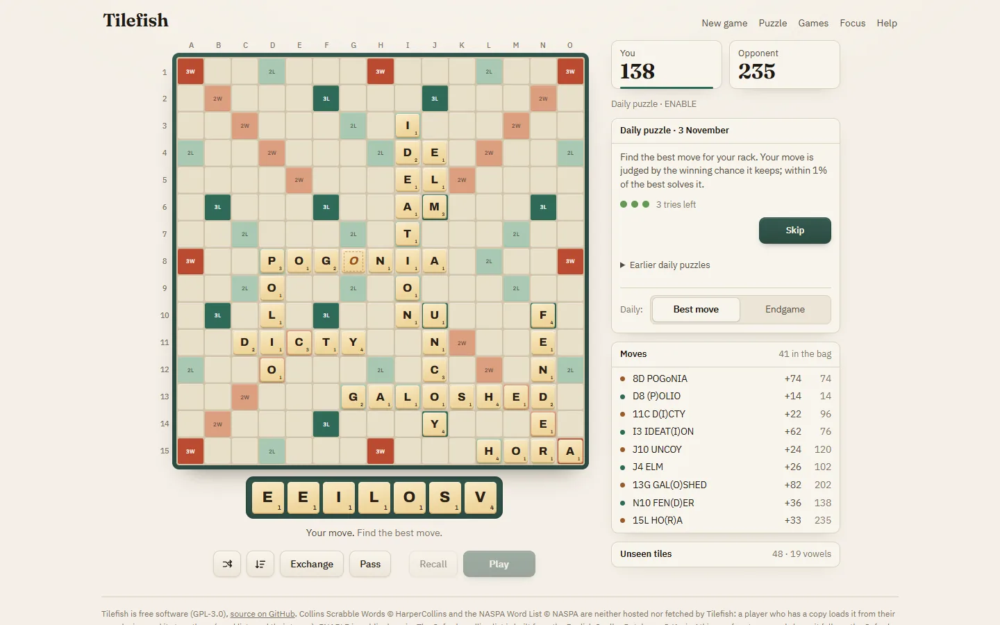

Combinatorics, game engines and software that checks its own answers.
Sixth-form student, United Kingdom.

Tilefish, the Scrabble engine below, on its daily puzzle for 3 November 2026: find the best move for the rack EEILOSV.
Selected work
Tilefish
A Scrabble engine in C++ that runs in the browser. It generates moves with a GADDAG and chooses among the best candidates by Monte Carlo simulation. It searches the endgame exactly once the bag is empty.
Against Macondo at BestBot’s settings, 60 s a move
48.6% of 832 games
MathRecords
Five new mixed van der Waerden numbers, found with a SAT solver and accepted into the OEIS in August 2026: A217058 a(12) = 57, A217005 a(19) = 52, A217007 a(7) = 68, A217236 a(4) = 84 and A217059 a(9) = 74.
Each lower bound is a colouring anyone can check by hand. Each upper bound was checked with DRAT proofs: 23,851 per-cube proofs replayed by drat-trim.
w(14; 212, 3, 4) > 56.
The lower-bound certificate for A217058 a(12) = 57:
56 cells, navy never carrying three in arithmetic
progression, ochre never carrying four, twelve
wildcards. Checkable by hand, or by the standard-library script below.
Check it yourself
This command reads the colouring from this page and checks its arithmetic progressions. It uses only the Python standard library.
A Raspberry Pi sensor network gives explainable early warnings of floods, heat, smog and storms. A team of two built it for the PA Raspberry Pi Competition 2026. Every panel says where its data came from: a physical sensor, a live API, a recorded event or a simulation.
The ClimateMesh dashboard replaying a flood scenario across twenty London nodes.
GreekScansion
GreekScansion scans Classical Greek dactylic hexameter. It claims only what the metre settles, reporting unique, ambiguous or unscannable rather than guessing.
GreekScansion on Odyssey 1.1. The spelling settles some syllables and leaves others open; the metre forces the rest, so the line has exactly one reading: five dactyls.
EndeavourRacing
Three web applications support a STEM Racing team. They provide the website, a lap-time prediction game and a project, risk and budget dashboard.
OEISHeadroom finds OEIS sequences that stopped early because a brute-force search got slow, and extends them. 123 new terms across these seven sequences were accepted between 31 August and 2 September 2026. Each program first reproduces every published term.
Five new mixed van der Waerden numbers found with a SAT solver, now in the OEIS. Lower bounds come with an explicit colouring; upper bounds were checked with DRAT proofs.
Finds OEIS sequences that stopped early because a brute-force search got slow, and extends them. Each program must reproduce every published term first.
Independent verification for ten new terms of five OEIS bishop-graph sequences: format, structural identities, and a live check against the published record.
Scrabble engine in C++ that you can play in the browser: Monte Carlo simulation, exact endgames, CSW24 and NWL23. Match logs against other engines included.
Drives a real key-value cluster through seeded TCP partitions and machine-checks the recorded history for linearizability, with a brute-force oracle behind the checker.
Does a removed border still bend a city's road network? A geometric permutation test for boundary severance, applied to the Berlin Wall and the Cyprus buffer zone.
Privacy-first, offline educational vision self-check that runs entirely in the browser - colour, acuity, astigmatism and contrast screening with a pure, unit-tested scoring core. Not a medical device.
A337114 a(25) to a(36) published, bringing the total to 174 accepted terms across 21 sequences.
The last of the five mixed van der Waerden numbers approved.
About
I'm a sixth-form student in the UK. I like combinatorics, chess, Scrabble and Classical Greek, and most of the projects here started from one of those.